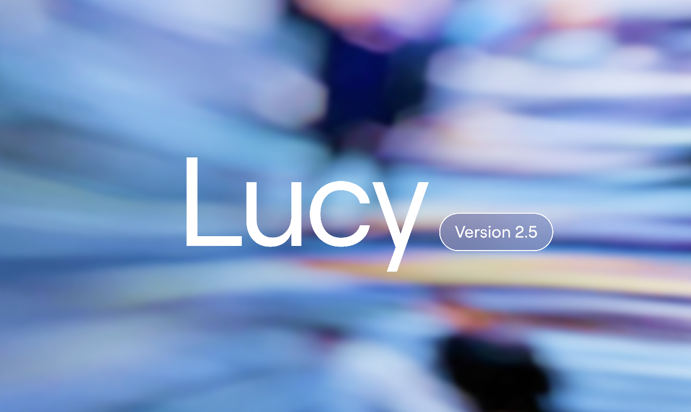

AI NEWS ISSUE 14
아마존의 Decart 인수 논의,
커머스 AI는
어디로 가는가
실시간 영상 편집부터 모델 운영, 공급업체의 사업 여건까지. 세 소식을 통해 AI를 도입할 때 성능과 함께 살펴볼 조건을 짚어봅니다.

AT A GLANCE
30초 요약
- 아마존·Decart 인수 논의 아마존이 Decart를 약 70억 달러에 인수하는 방안을 논의 중이라는 보도가 나왔습니다. Decart는 실시간 영상 모델과 AI 실행을 최적화하는 기술을 보유하고 있습니다. 인수는 아직 확정되지 않았습니다.
- 오픈웨이트 모델의 선택권 공개된 모델을 내려받아 직접 운영하는 기업들이 있습니다. 어떤 모델을 쓸지뿐 아니라 데이터를 어디서 처리할지도 함께 살펴야 합니다.
- Moonshot의 분쟁 해결 협상 경영진이 주주 측과 기존 분쟁을 해결하기 위해 협상 중이라는 보도가 나왔습니다. 합의가 이뤄졌거나 의혹이 사실로 확인됐다는 뜻은 아닙니다.
10월 11~12일자 보도와 관련 공식 자료를 2026년 10월 12일 한국시간 기준으로 확인했습니다. 보도 날짜는 원문을 따랐으며, 앞서 발표된 제품도 이번 소식을 이해하는 데 필요한 배경으로 소개합니다.
AI를 도입할 때 가장 먼저 눈에 들어오는 것은 결과물입니다. 영상이 얼마나 자연스러운지, 답이 얼마나 정확한지부터 보게 됩니다. 업무에 꾸준히 활용하려면 운영 방식도 살펴야 합니다. AI를 어디서 실행하고 누가 운영할까요? 서비스 제공 조건이 달라지면 어떻게 대응할 수 있을까요?
이번 호에서는 기업 인수 논의, 오픈웨이트 모델 활용, 기업의 분쟁 해결 협상을 차례로 살펴봅니다. 각 소식이 우리 업무에 어떤 의미가 있는지도 짚어보겠습니다.
01 / LIVE VIDEO & INFRASTRUCTURE
아마존이 인수를 논의하는 Decart,
어떤 기술을 가진 회사일까요?
10월 11일 Reuters는 월스트리트저널(WSJ)을 인용해 아마존이 Decart를 약 70억 달러에 인수하는 방안을 논의 중이라고 전했습니다. 보도에 따르면 아마존은 논평을 거절했으며, Decart는 논평 요청에 답하지 않았습니다. Reuters 보도, AOL 재게재 ↗
이번 보도는 인수를 논의하고 있다는 내용으로, 계약 체결이나 인수 완료를 뜻하지는 않습니다. 거래가 성사될 경우 아마존이 이 기술을 어떤 제품에 활용할지도 아직 알려지지 않았습니다.
Lucy, Oasis, DOS는 하는 일이 다릅니다
Lucy(루시)는 들어오는 영상을 실시간으로 편집하는 모델입니다. Decart에 따르면 영상이 재생되는 동안 배경을 바꾸거나 물체를 추가·제거하고, 옷이나 인물의 모습도 바꿀 수 있습니다. 회사는 7월 16일 Lucy 2.5를 발표하며 텍스트 지시와 참고 이미지를 활용한 편집 기능을 소개했습니다. Lucy 2.5 공식 발표 ↗
Oasis(오아시스)는 행동에 따라 달라지는 가상 환경을 생성하는 월드 모델입니다. 월드 모델은 환경의 변화를 학습해 다음 장면이나 상태를 만들어 내는 AI입니다. 6월 10일 발표된 Oasis 3는 자율주행 차량을 시작으로, 로봇의 학습과 시험에 필요한 환경을 생성하는 데 초점을 맞췄습니다. Oasis 3 공식 발표 ↗
AI의 학습과 실행을 돕는 기술로는 DOS(Decart Optimization Stack)가 있습니다. 모델을 학습시키는 작업과 학습한 모델이 답이나 영상을 만들어 내는 추론 과정을 더 효율적으로 처리하도록 돕는 소프트웨어입니다. Decart는 NVIDIA GPU, AWS Trainium, Google TPU 등 여러 AI 연산 장치에 맞춰 실행을 최적화한다고 설명합니다. 성능은 사용할 모델과 장치에 맞춰 따로 확인해야 합니다. DOS 공식 소개 ↗
공식 제품 설명을 정리한 개념도
영상 모델과 이를 뒷받침하는 기술
배경·의상·물체의 모습을 바꿉니다.
행동에 따라 다음 장면을 만듭니다.
연산 장치와 작업에 맞춰 실행을 최적화합니다.
라이브커머스에 활용한다면
Decart는 Lucy의 활용 분야로 실시간 쇼핑과 광고를 제시합니다. 영상에서 옷을 가상으로 입어 보거나 공간에 상품을 배치하는 방식을 소개합니다. 다만 이는 회사가 제시한 활용 방향입니다. 우리 서비스에 적용했을 때의 품질과 매출 효과는 별도로 확인해야 합니다. Lucy 공식 제품 소개와 데모 ↗
모임에서는 가상 상품을 담은 영상의 배경만 바꾸는 작은 실험부터 시작해 볼 수 있습니다. 이때 AI가 상품의 색이나 무늬, 로고까지 바꾸면 상품 정보를 잘못 전달할 수 있습니다. 편집할 영역을 미리 정하고, 결과물을 원본과 대조해 상품의 모습이 그대로 유지됐는지 확인해야 합니다.
헬로우 휴먼의 검수 예시 · 가상 상품으로 만든 설명용 그림
배경은 바꿔도, 상품 정보는 그대로
판매할 상품은 초록색 · DEMO · 500 mL 텀블러입니다. 편집 결과를 골라, 그대로여야 할 정보가 달라졌는지 비교해 보세요.
원본 · 판매할 상품
초록색 / DEMO / 500 mL
편집 결과 · 배경만 변경
색·로고·용량 표기 일치
편집 결과 · 상품 색 변경
초록색 → 파란색 불일치
편집 결과 · 로고·용량 오류
DENO / 300 mL 불일치
한 장면이 맞아도 영상 전체를 봐야 합니다
이 장면에서는 상품 정보가 유지됐습니다. 다음에는 손으로 가렸다 놓기, 상품 돌리기, 빠르게 움직이기를 담은 영상으로 윤곽과 글자가 흔들리지 않는지 확인합니다.
다른 색상 옵션으로 오해할 수 있습니다
배경만 바꾸려 했는데 상품 색까지 달라졌습니다. 상품은 원본 영상으로 유지하고 배경을 따로 합성하는 방식 등을 검토해 다시 제작합니다.
읽을 수 있는 글자도 원본과 다를 수 있습니다
브랜드 철자와 용량이 바뀌었습니다. 로고·용량이 보이는 상품 원본을 보존하고, 가격·할인율 같은 판매 자막은 확인된 정보로 최종 편집 단계에서 넣습니다.
검수할 때 남길 기록 오류가 보인 시각 · 원본과 결과 화면 · 달라진 항목 · 다시 제작할 부분
속도를 평가할 때도 촬영부터 화면 출력까지의 전체 과정을 봐야 합니다. 모델이 영상 한 장을 처리하는 시간만으로는 시청자가 결과를 보기까지 얼마나 기다려야 하는지 알 수 없습니다. 촬영과 영상 압축, 네트워크 전송, 화면 출력에 걸리는 시간을 모두 고려해야 실제 방송에 쓸 수 있을지 판단할 수 있습니다.
Decart의 기술을 살펴보면 영상 편집뿐 아니라 AI 인프라와의 연결 가능성도 보입니다. DOS가 AWS Trainium을 비롯한 여러 연산 장치에 맞춰 실행을 최적화하기 때문입니다. 다만 이는 제품 설명을 바탕으로 한 해석이며, 아마존이 밝힌 인수 목적은 아닙니다.
02 / MODELS & DEPLOYMENT
중국 AI 모델을 활용하는 미국 기업,
어디서 실행하는지도 중요합니다
10월 11일 Washington Post는 중국 AI 모델을 활용하는 미국 기업들을 다뤘습니다. Washington Post 보도 ↗
기업이 공개한 자료에서도 이런 흐름을 확인할 수 있습니다. DoorDash는 생성형 AI 플랫폼 팀의 공식 채용 공고에서 GLM, Qwen, Kimi, DeepSeek 같은 오픈웨이트 모델을 직접 운영하는 업무를 소개합니다. 다만 이 공고만으로 어떤 고객 서비스에 어느 버전의 모델을 적용했는지, 도입 범위가 얼마나 넓은지까지 알 수는 없습니다. DoorDash 공식 팀·직무 소개 ↗
가중치가 공개되면 무엇을 할 수 있나요?
오픈웨이트(Open-weight)는 AI가 학습한 내용을 담은 수치인 가중치를 공개하는 방식입니다. 이용 조건이 허용하는 범위에서 모델을 내려받아 직접 실행하거나 업무에 맞게 조정할 수 있습니다. Moonshot도 Kimi K3의 공식 모델 페이지에서 가중치와 배포 방법을 안내하며, 별도의 이용 조건인 Kimi K3 License를 제공합니다. Kimi K3 공식 모델 페이지 ↗
가중치를 공개했다고 해서 학습 데이터와 학습 코드까지 모두 공개한 것은 아닙니다. 오픈웨이트와 오픈소스를 같은 말로 쓰지 않는 이유입니다. Open Source Initiative(OSI)의 오픈소스 AI 정의도 가중치뿐 아니라 모델 수정에 필요한 코드와 학습 데이터에 관한 정보를 요구합니다. OSI의 Open Source AI 정의 ↗
독립 평가 · 2026.10.12 확인
중국 오픈웨이트 모델 4종 비교
문서 작업·코딩·추론 등 10개 평가를 합친 점수입니다.
비교 범위와 공식 모델 보기
본문에 등장한 네 모델 계열에서 버전을 하나씩 골랐습니다. 중국 모델 전체의 순위나 DoorDash가 도입한 버전을 나타내지 않습니다. 원문의 정수 점수를 옮겼습니다. max는 해당 모델의 추론 강도 설정이며, 모델 간 연산량이 같다는 뜻은 아닙니다. 점수와 평가 구성은 갱신될 수 있습니다. 가중치가 공개돼 있어도 각 모델의 이용 조건은 다릅니다.
성능을 비교한 다음에는 실행 장소를 봅니다
가중치가 공개된 모델도 외부 업체의 API로 이용할 수 있습니다. 같은 모델을 선택하더라도 질문을 외부에 보내 처리하는지, 모델을 가져와 직접 실행하는지에 따라 데이터가 오가는 경로와 관리할 일이 달라집니다.
가상 고객 문의로 보는 실행 경로
질문을 보내나요,
모델을 가져오나요?
이 상품, 개봉 후에도 반품되나요?
외부 API 이용
질문을 보내고, 답변을 받습니다.
계약·설정에서 확인질문 보관 여부 · 학습 활용 여부 · 데이터 처리 지역
직접 운영
모델을 가져와, 관리하는 서버에서 실행합니다.
우리 관리 환경 사내 서버 또는 계약한 클라우드
직접 관리할 것서버 비용 · 접근 권한 · 모델 업데이트 · 장애 복구
어느 방식이 더 저렴한지는 사용량과 운영 환경에 따라 달라집니다. 외부 API를 이용하면 서버 운영 부담이 줄지만, 제공업체의 서비스 조건을 따라야 합니다. 직접 배포하면 실행 환경을 더 세밀하게 관리할 수 있는 대신, 서버를 쓰지 않는 동안에도 비용이 들 수 있고 장애에 대응할 인력도 필요합니다.
따라서 모델을 개발한 국가나 입력·출력 요금만으로 판단하기보다, 실제 제공업체, 데이터 처리 위치, 이용 조건, 운영 비용을 함께 확인하는 편이 좋습니다. 모델의 가중치가 공개돼 있어도 보안과 운영을 관리할 책임은 남습니다.
03 / COMPANY & CONTINUITY
Moonshot의 분쟁 해결 협상,
서비스 제공업체도 살펴야 합니다
10월 12일자 Reuters 보도에 따르면, Kimi 개발사 Moonshot의 경영진은 홍콩 상장을 준비하며 주주 측과 기존 분쟁을 해결하기 위한 협상을 진행하고 있습니다. 이번 보도의 초점은 기존 분쟁을 정리하기 위한 합의 논의에 있습니다. Reuters 보도, MarketScreener 재게재 ↗
보도에 따르면 Moonshot 경영진과 Recurrent.ai·일부 투자자 사이의 분쟁은 2024년부터 이어져 왔습니다. Reuters는 상대 측의 주장을 독자적으로 확인하지 못했다고 밝혔습니다. Moonshot의 CEO는 과거 제기된 의혹을 부인했으며, 회사는 이번 보도에 논평하지 않았습니다. 합의가 임박했는지도 아직 확인되지 않았습니다.
이 보도만으로 Kimi의 성능이나 보안에 문제가 있다고 판단할 수는 없습니다. 다만 AI 서비스를 장기간 사용할 기업이라면 제품 평가와 함께 서비스 제공업체도 살펴볼 필요가 있습니다. 누구와 계약하는지, 어떤 지원을 받을 수 있는지, 제공 조건이 달라지면 어떻게 대응할지를 확인하는 것입니다.
나중에 모델을 바꾸더라도 업무 방식을 처음부터 다시 설계하지 않도록 준비해 두면 좋겠습니다. 입력 자료와 기대하는 결과, 검수 기준을 기록해 두면 다른 모델에 같은 일을 맡겼을 때도 비교하기가 수월합니다.
OUR VIEW
좋은 결과를
꾸준히 얻으려면
세 소식은 AI를 업무에 활용할 때 무엇을 살펴야 하는지 보여줍니다. 실시간 영상을 처리하는 기술과 실행 환경, 공개된 모델을 직접 운영할 때의 조건, 서비스를 제공하는 회사의 사업 여건까지 검토할 범위가 넓어집니다.
이를 커머스 업무에 연결하면 질문은 더 구체적이 됩니다. 영상이 상품의 모습을 정확하게 보여주는지, 고객 데이터가 어디에서 처리되는지, 서비스 조건이 달라져도 업무를 이어갈 수 있는지 살펴보는 것입니다.
모델을 고르는 일은 도입의 시작입니다. 실제 업무에 활용한 뒤에도 품질과 비용, 실행 환경, 지원 조건을 꾸준히 확인해야 합니다. 점검 항목과 절차를 정해 두면 이러한 검토를 매번 처음부터 시작할 필요가 없습니다.
SMALL EXPERIMENT
같은 반품 문의에
두 AI는 어떻게 답할까요?
가상의 쇼핑몰 규정과 고객 문의를 두 AI에 똑같이 넣어 봅니다. 규정에 맞게 답하는지, 없는 정보를 지어내지 않는지 확인하는 실험입니다. 앞의 벤치마크를 읽은 뒤, 직접 답변을 비교해 볼 수 있는 작은 연습입니다.
1. 두 AI에 같은 질문을 넣습니다
평소 이용하는 AI 채팅 서비스 두 곳을 엽니다. 각 서비스에서 새 대화를 시작하고, 아래 입력문을 복사해 붙여 넣으세요. 서비스 이름을 적고, 모델명이 표시된다면 함께 기록합니다.
복사해서 넣을 내용 · 모두 가상의 자료입니다
아래 가상 쇼핑몰의 규정만 근거로 고객 문의 3개에 답해 주세요. 각 답변은 두 문장 이내로 쓰고, 규정에 없는 내용은 확인이 필요하다고 알려 주세요. [실험용 가상 규정] - 상품을 받은 지 7일 이내이고 포장을 뜯지 않았다면 단순 변심 반품이 가능합니다. - 포장을 뜯은 뒤에는 단순 변심 반품이 불가능합니다. - 반품 배송비 금액은 이 자료에 없습니다. [고객 문의] ① 3일 전에 받았고 포장은 안 뜯었어요. 마음이 바뀌었는데 반품할 수 있나요? ② 어제 받아 포장을 뜯었어요. 불량은 없지만 마음에 안 드는데 반품할 수 있나요? ③ 반품 배송비는 얼마인가요?
2. 답변을 아래 기준과 맞춰 봅니다
말투가 자연스러운지만 보지 말고, 답변의 내용이 규정과 맞는지 확인하세요.
| 고객 문의 | 이렇게 답했는지 확인하세요 |
|---|---|
| ① 미개봉 반품 | 반품 가능받은 지 7일 이내이고 미개봉이라는 조건을 근거로 답했나요? |
| ② 개봉 후 반품 | 단순 변심 반품 불가하루밖에 지나지 않았어도 포장을 뜯었다는 조건을 놓치지 않았나요? |
| ③ 배송비 | 금액 확인 필요자료에 없는 금액을 임의로 정하지 않았나요? |
3. 고쳐야 할 답변을 한 줄씩 기록합니다
각 AI의 답변 3개 중 위 기준과 달라 사람이 수정해야 할 답변이 몇 개인지 세어 보세요. 틀린 답변이 있다면 어느 조건을 놓쳤는지 함께 적습니다.
기록할 내용서비스·모델명 / 확인 날짜 / 수정할 답변 수(0~3개) / 놓친 조건
모임에서는 두 AI의 답변을 나란히 보며 이야기해 보세요. 같은 규정을 줬는데 결과가 달랐는지, 실제 고객에게 보내기 전에 사람이 어디를 고쳐야 했는지가 토론의 주제입니다.
모임에서 해볼 실험 제안입니다. 실제 측정 결과는 포함하지 않았으며, 세 질문만으로 모델의 전체 성능을 판단할 수는 없습니다.
읽은 자료
- Reuters, 아마존·Decart 협상 보도 ↗ 10월 11일 · AOL 재게재, WSJ 인용
- Decart, Lucy 2.5 발표 ↗ 7월 16일 · 영상 편집 기능과 회사가 선정한 공식 데모
- Decart, Lucy 제품 소개 ↗ 실시간 쇼핑·광고 활용 설명
- Decart, Oasis 3 발표 ↗ 6월 10일 · 행동에 반응하는 가상 환경
- Decart, DOS 소개 ↗ 학습·추론 실행 최적화
- Washington Post 기사 ↗ 10월 11일
- DoorDash, 생성형 AI 플랫폼 직무 소개 ↗ 기업이 설명한 직접 운영 범위, 공고의 최초 게시일은 확인하지 못함
- Moonshot, Kimi K3 모델 페이지 ↗ 가중치·배포 안내·이용 조건
- Artificial Analysis, 모델 평가 결과 ↗ 10월 12일 확인 · 선정한 오픈웨이트 모델 네 개의 Intelligence Index
- Artificial Analysis, 평가 방법 ↗ Intelligence Index v4.3.2 구성과 평가 조건
- OSI, Open Source AI Definition 1.0 ↗ 오픈웨이트와 오픈소스의 구분 참고
- Reuters, Moonshot 합의 논의 보도 ↗ 10월 12일자 · MarketScreener 재게재
자료 확인일은 2026년 10월 12일입니다. WSJ와 Reuters의 원문 페이지에 접근하지 못해, 다른 매체에 재게재된 Reuters 기사 본문을 확인했습니다. Moonshot 기사의 재게재 페이지에는 미국 동부시간 10월 11일 오후 7시로 표시돼 있습니다. 한국시간으로는 12일 오전 8시입니다.
같은 내용을 다룬 공식 한국어 자료를 찾지 못해 영문 자료로 연결했습니다. 제품 성능과 기업의 도입 효과를 직접 측정하지 않았습니다. 이미지의 권리는 각 제공자에게 있으며, 영상은 Decart 공식 채널의 YouTube 플레이어로 제공합니다. 재생이 제한되면 캡션의 공식 영상 링크를 이용할 수 있습니다. 벤치마크 그래프는 Artificial Analysis의 공개 점수를 재구성했으며, 상품 검수와 배포 경로 도식은 설명용입니다.